| |
Flower Fields/Sea World 2024
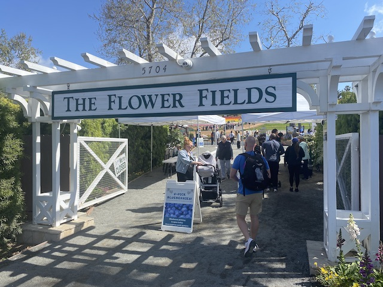
All right. Time for our other Sea World update for 2024. Cause yeah. I didn't go nearly as often as I had hoped, only going one other time in 2024. Aside from that, this was all the Sea World we did (We expected more, hence the reason for this update being so late). Bummer, as 2024 was another let-down year. But in some good news, this was a REALLY GOOD VISIT!!! One of the best Sea World days I've had in a long time. And of course, we had a brief stop in the morning in the Carlsbad Flower Fields for some fun before hitting Sea World. =)
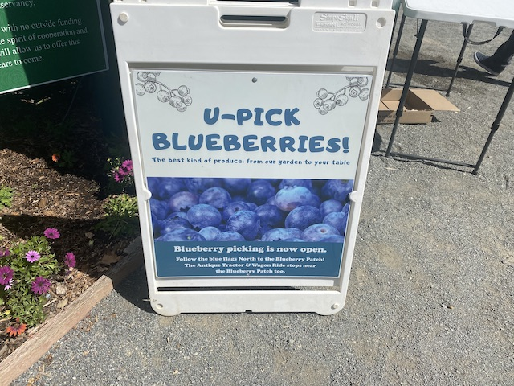
This does sound cool. But.....I'm not a huge fan of blueberries. And I have more than enough food in my fridge. Maybe some other day with a fruit I enjoy better.
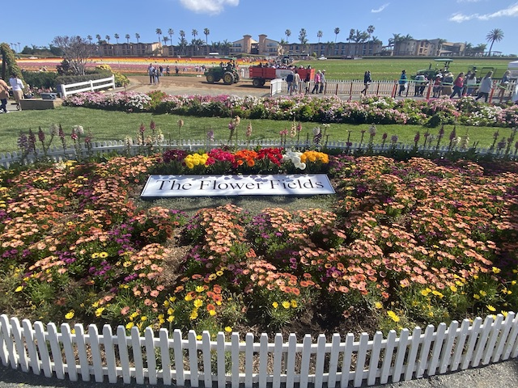
So this is a place that has been on my mind for a while. First discovered it during the COVID lockdowns of 2020 when I spontaneously googled "Best Flower Fields in the World", and found the Carlsbad Flower Fields in a Top 10 List (this may not be the same Top 10 List, but this list showcases all the cool ones I remember). And with how close it was, I really wanted to hit it up on a San Diego trip. But that kept getting postponed and delayed, due to many bad years with no real options, it being a relatively low priority, and only having a narrow window of the year when you can hit it made including this a challenge. But it had been a while, and everything was in our favor. So we hit it up.
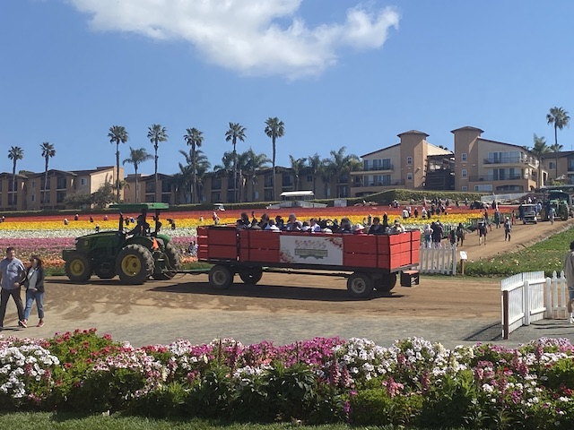
No wait! This is actually an amusement park! See look! They have a tractor ride! =P
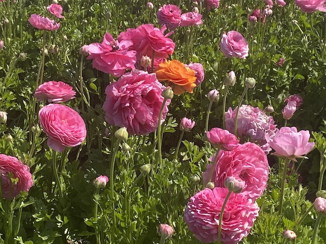
Yeah. I know this is a place that is beloved by the Instagram crowd, with so many people only here to get a perfect shot. But this seriously is a really cool place.
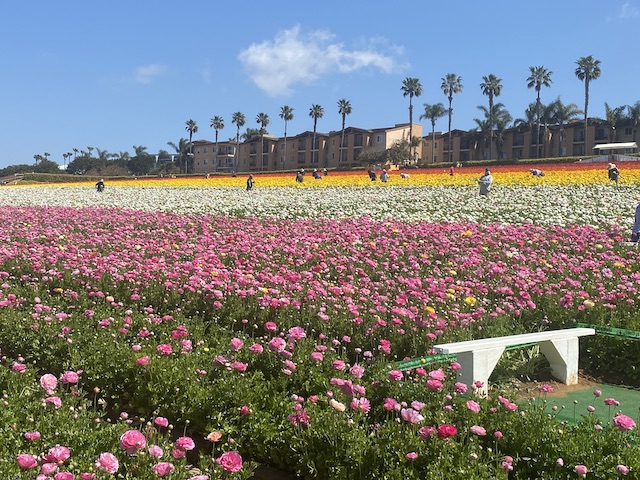
It seriously is really cool to just check out row after row after row of beautiful flowers.
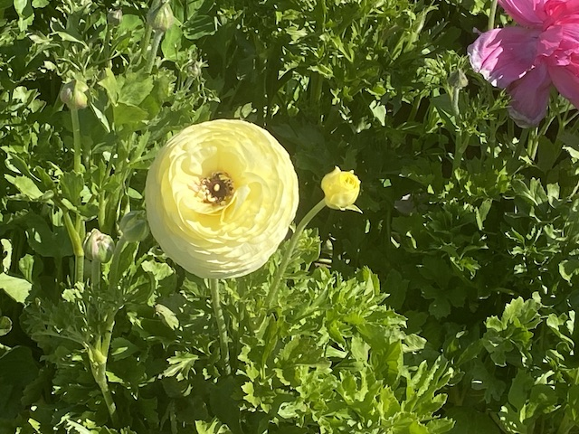
"Hey! You're not a bee! Get the f*ck away from me!"
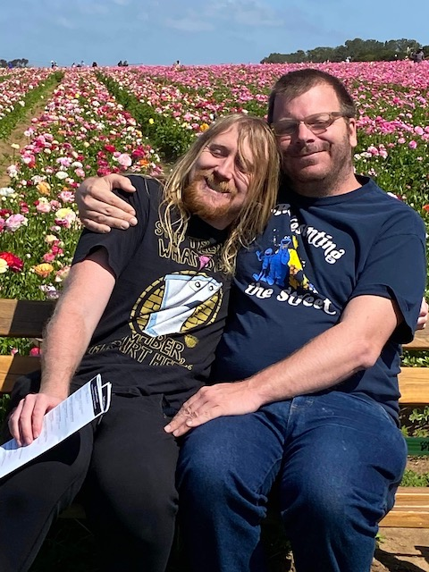
Cute cliched couples shot right by all the flowers. =)
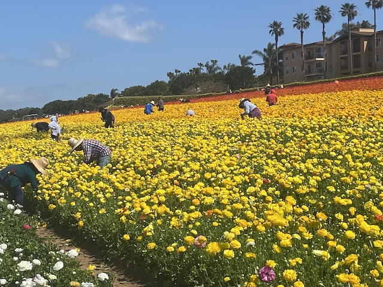
How many of these workers have been kidnapped to a concentration camp in El Salvador by the current fascist regime?
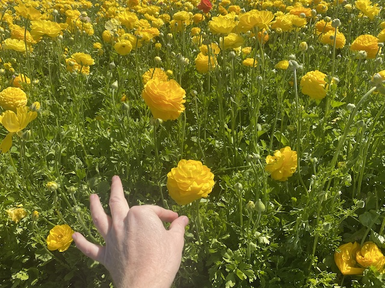
I'm sure they won't mind if I just take one little flower. >=)
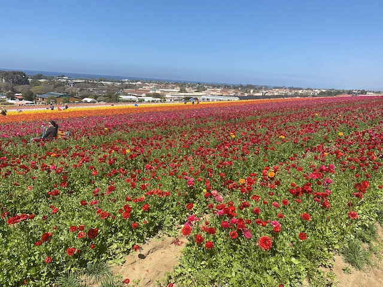
I know this isn't the type of place to be showcased on a coaster website, but f*ck it! This place is awesome!
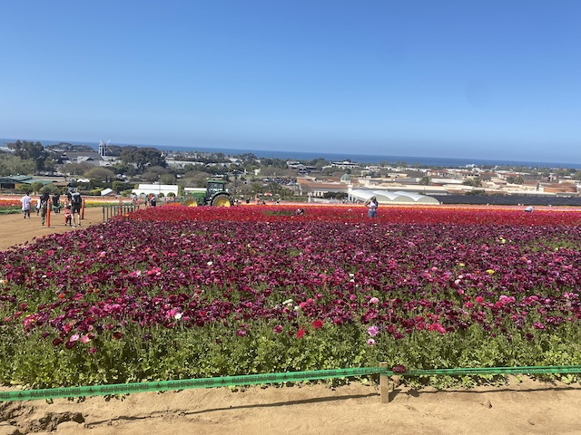
Of course, it's not just the flowers that make this place so cool. But also the great view of the Pacific Ocean that goes with it.
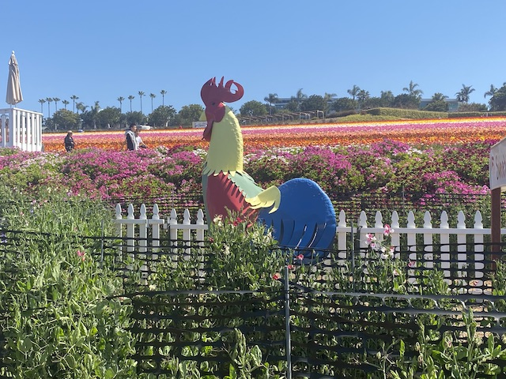
Hey Knotts! The Carlsbad Flower Fields stole your giant chicken statue! ;)
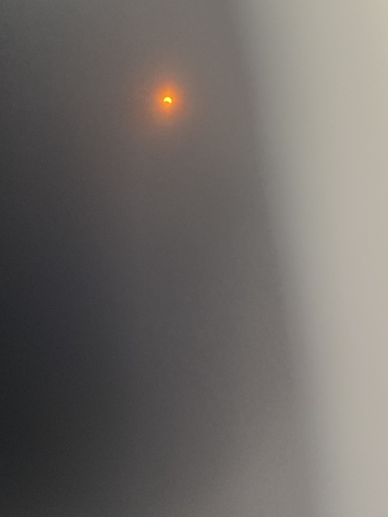
So we wound up going on the day of the April 8, 2024 Total Solar Eclipse. I initially didn't pay much attention, as while it would be cool to see, it also was more in the South, Midwest, and Northeast. California wasn't in the path, so I didn't think much of it. But when I came to the Flower Fields, the people there were still checking out the eclipse as while we still couldn't see the total eclipse, you could still see a partial eclipse everywhere else in the United States (except for Northern Alaska). And they had people checking it out. Including those special eclipse glasses that are dirt cheap if you buy now, but the day before an eclipse, are price-gouged to oblivion. Thanks for sharing those (this picture was taken by putting the glasses over my phone and snapping a picture).
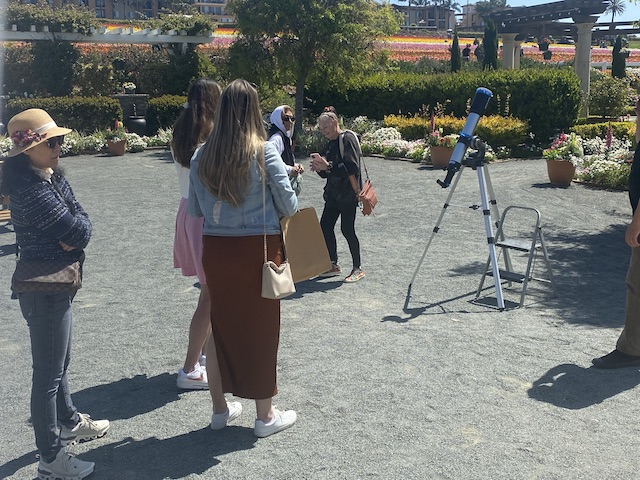
They were even kind enough to have an actual telescope out for people to look at the eclipse through.
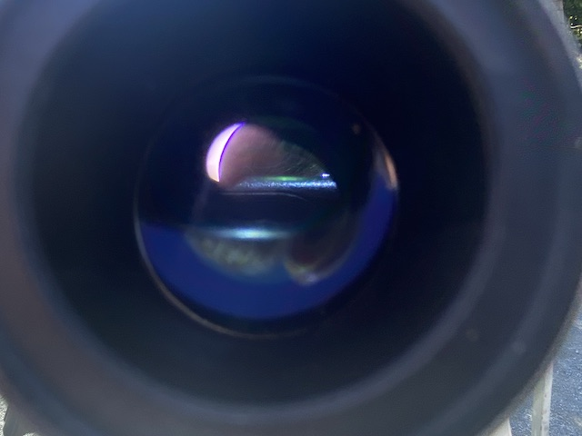
The upisde. Seeing the eclipse from a telescope was SO COOL!!! Loved seeing that. It really brought out the Astronomy nerd in me. And I TOTALLY want to see a total solar eclipse one of these days. But I'll have to either actually travel to do that or wait until 2045 (and even then, I'd still have to travel to Northern Northern California to see it).
The downside. This shot is F*CKING HORRIBLE!!! It looked GREAT with my eye! But unfortunately, putting your phone to a telescope and taking a photo DOESN'T WORK!!! THIS LOOKS LIKE SH*T!!! AT LEAST THE FIRST PHOTO, WHILE NOT GREAT, AT LEAST YOU CAN SEE THE SUN AND THE MOON DOING THE PARTIAL ECLIPSE AT ALL!!! It requires special equipment, which.....they didn't provide. They were nice enough to just use the telescope at all. If I do this again, I'm for sure gonna figure out how to get good photos of it.
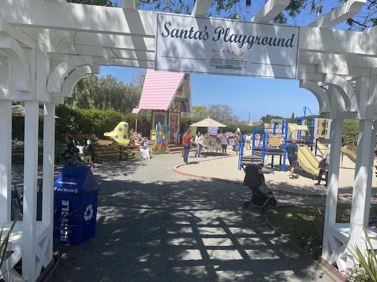
I guess they also do Christmas events here if they still call the playground Santa's Playground.
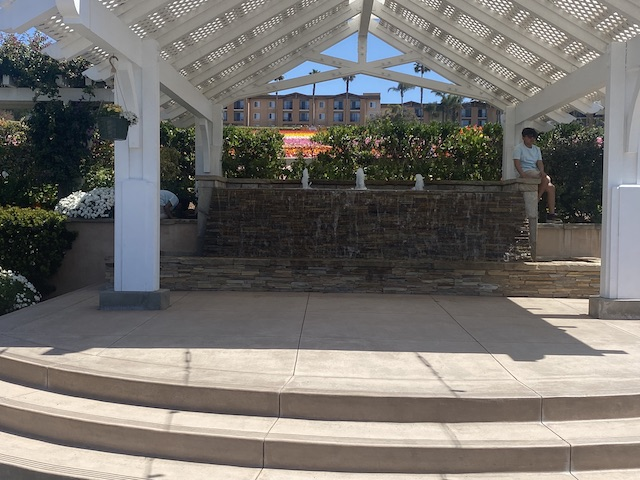
Pretty fountain right in front of all the flowers.
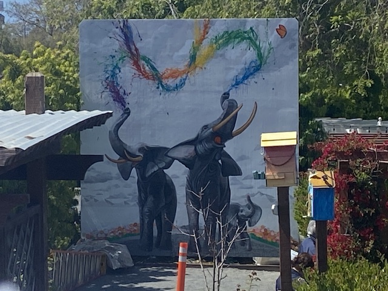
So in total, I'm super glad we stopped at the Carlsbad Flower Fields. It was really cool, and I hope to check out the Antelope Valley Flower Fields next year. =)
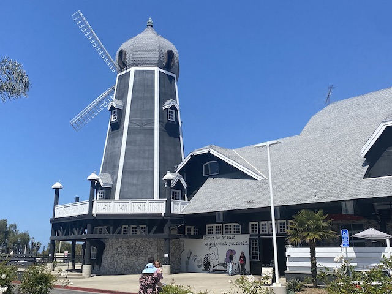
If you want to find the Carlsbad Flower Fields, it's right by the Carlsbad Windmill, which now functions as a giant food court.
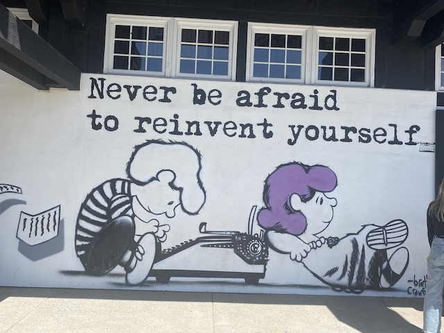
We're too polite to tell you that your current self is sh*t and you need a makeover badly. But.....yeah.
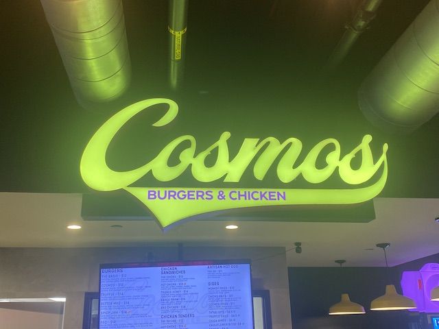
Eating inside the Windmill Food Court, we decided to try out Cosmos Burgers, a local place that really was freaking good. Thumbs up.
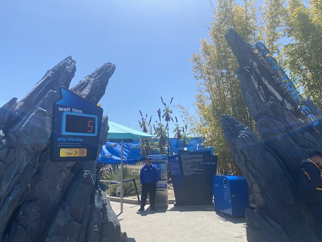
OK. That's enough. The flower fields are great and all. But this is IncredibleCOASTERS. So yeah. Time for some of that. =)
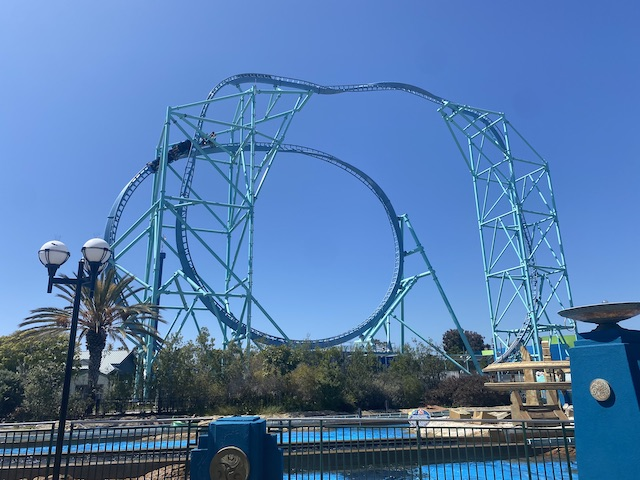
I know this is one of the more overlooked coasters, but Electric Eel still is a really fun ride.
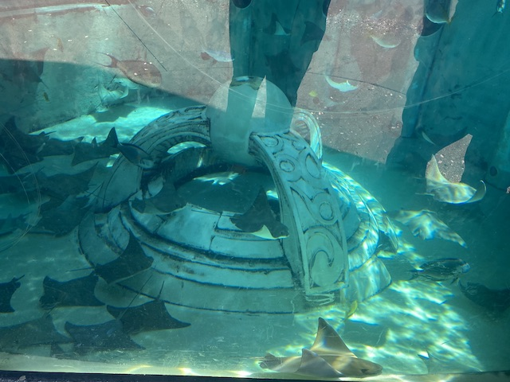
And of course, this is Sea World. So yeah. There's naturally gonna be some animals.
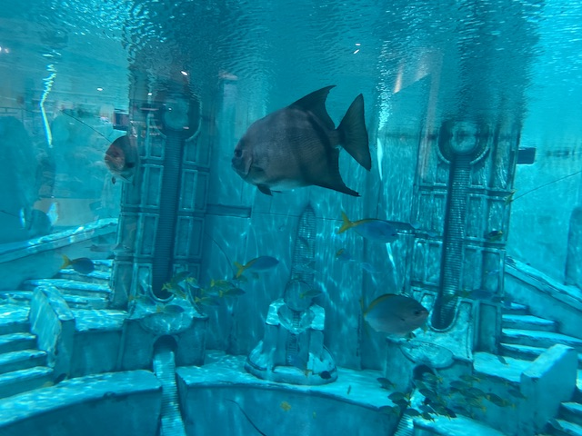
"How's it going guys? I'm a fish."
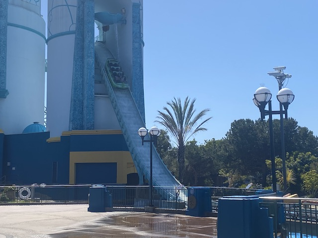
Glad to see the drop is back on Journey to Atlantis. And yeah. That was fun today.
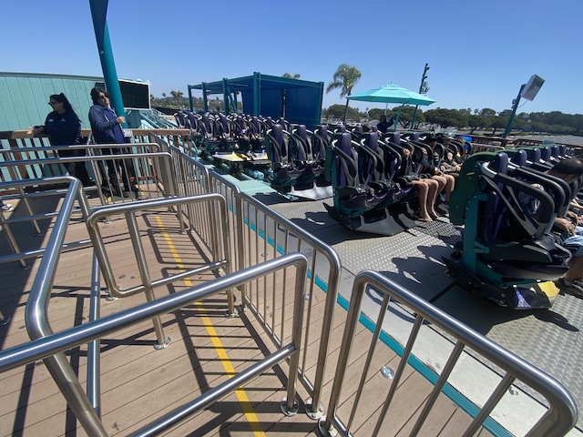
Gee. I wonder if we hit a good day to visit the park?
 It may not be one of the monsterously big Dive Machines, but Emperor still packs a powerful punch. =)
It may not be one of the monsterously big Dive Machines, but Emperor still packs a powerful punch. =)
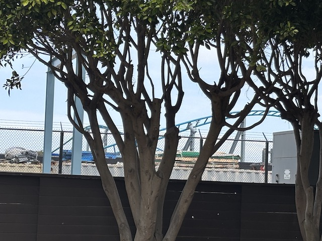
Arctic Rescue just blends in as another coaster at Sea World to hit whenever visiting the park.
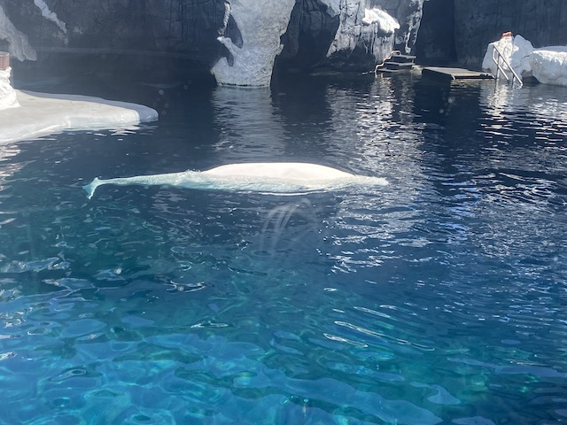
And of course, see the animals after riding the ride. =)
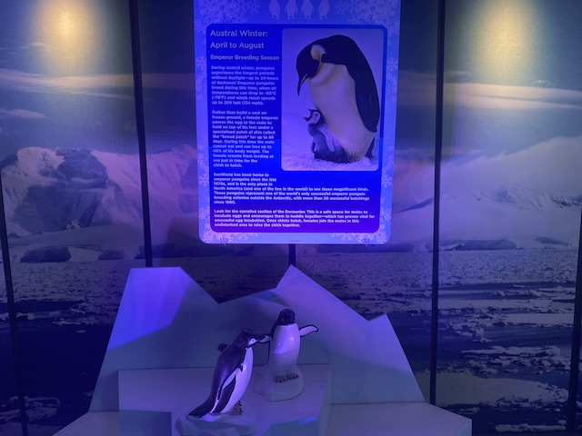
Is it me or do the penguins seem off today?
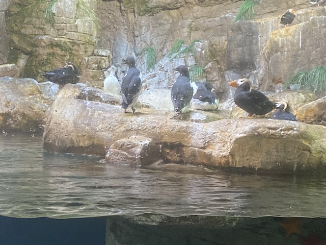
Want penguins? Too bad. The best you're gonna get are puffins.
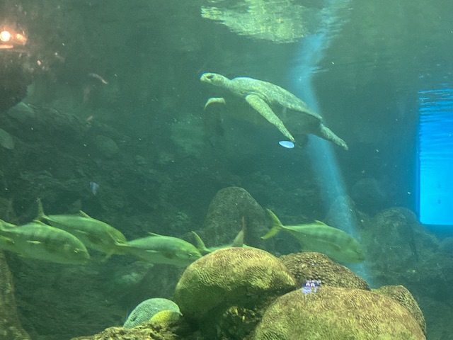
Anyone know how to get to Hawaii from here?
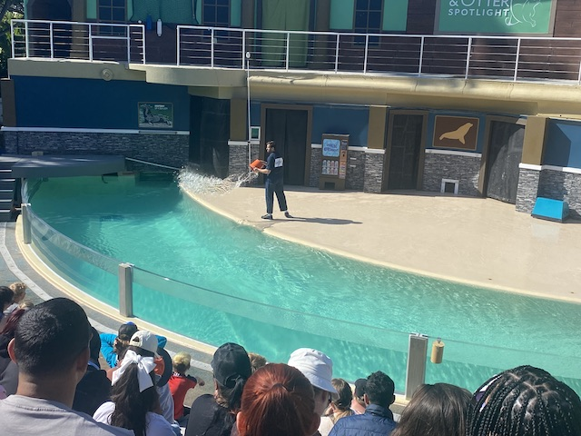
All right. The Clyde & Seymour show officially ended last year. And they replaced it with the Sea Lion Encounter.
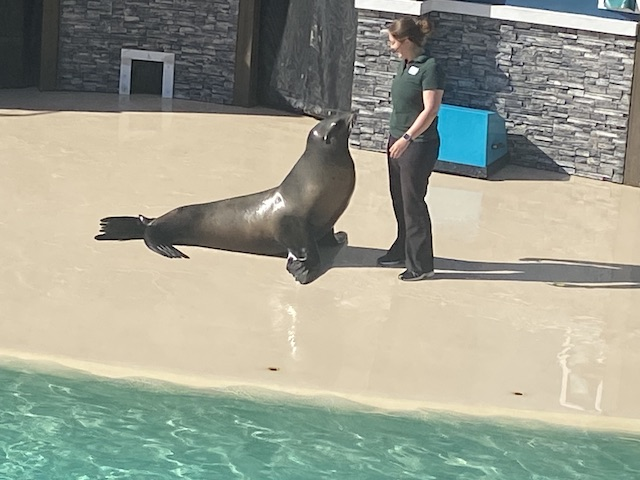
Much like the Orca Encounter is less of a splashy show and more of an educational exhibit, it's the same thing here. Only with Sea Lions instead of Orcas.
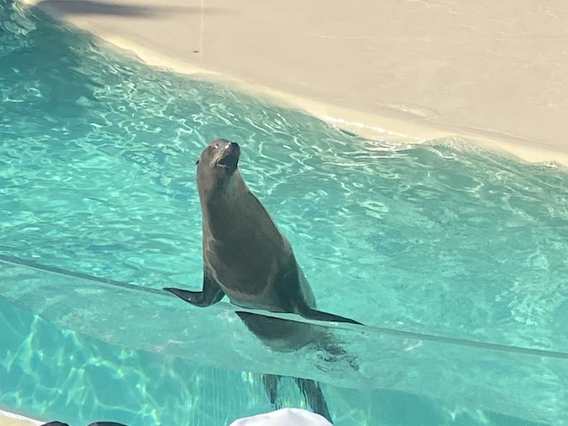
While I do have suspicions over the reason for doing this that I really don't like, I will admit that I do prefer this as opposed to the silly cheesy tricks they did at the old show.
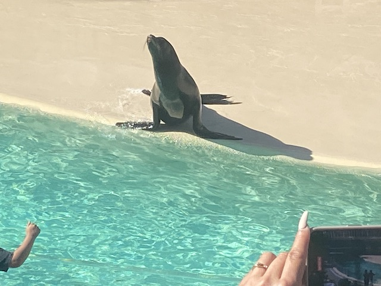
Arf arf! Check out my new exhibit! I get to show off and get fed fish all day. This setup is awesome!
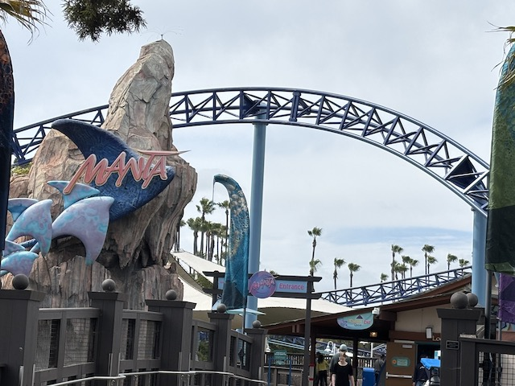
It may not be the best coaster in San Diego anymore, but it's still a great example of how "Bigger doesn't always equal better".
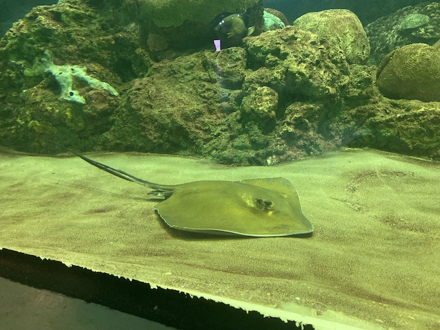
"You better have been talking positively about my coaster."
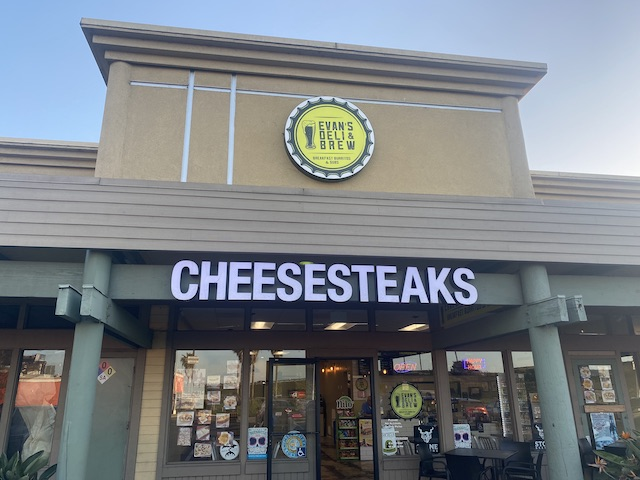
And finally, we end this day with checking out dinner with our San Diego friend at a really good local sandwich place (How's it going Evan? Checking out your deli today). While it's sad that this was the only visit for this visit and that 2024 was full of so much bullsh*t that prevented us from taking more visits, at least this specific day was a GREAT visit. I'm looking foreward to many more great visits in 2025.
Home
|